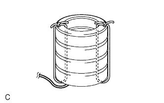

MẶT VÔ LĂNG > HUỶ |
| 1. HUỶ CỤM MẶT VÔLĂNG CÙNG VỚI XE |
Kiểm tra xem SST có hoạt động tốt hay không.
 |
Nối kẹp đỏ của SST vào cực dương (+) ắc quy và kẹp đen vào cực âm (-) ắc quy.
Bấm công tắc kích hoạt của SST và kiểm tra rằng đèn LED của công tắc kích hoạt của SST sáng lên.
Tháo SST ra khỏi ắc quy.
Tuân theo “Chú ý” (Xem trang Kích chuột vào đây).
Tháo cáp ra khỏi cực âm (-) ắc quy.
Tháo nắp che dưới trục lái.
Xoay vôlăng sang phải và trái khi cần để tháo 2 vít.
Tháo vít và nắp dưới.
Lắp SST.
Tháo giắc nối túi khí màu vàng ra khỏi cáp xoắn.
Nối SST (A) và SST (B). Sau đó nối giắc của SST (B) vào cáp xoắn.
 |
Di chuyển SST ít nhất 10m cách xa khỏi cửa sổ phía trước.
Để một khe hở nhỏ ở cửa sổ phía trước để cho dây điện của SST. Đóng các cửa sổ còn lại của xe. Đóng tất cả các cửa.
Nối kẹp đỏ của SST vào cực dương (+) ắc quy và kẹp đen vào cực âm (-) ắc quy.
Cho nổ túi khí.
Kiểm tra rằng không có ai bên trong xe hay trong phạm vi bán kính 10 m xung quanh xe.
Bấm công tắc kích hoạt của SST và cho nổ túi khí.
| 2. HỦY CHỈ RIÊNG CỤM MẶT VÔLĂNG |
Kiểm tra xem SST có hoạt động tốt hay không (Xem bước trước).
Tháo mặt vô lăng (Xem trang Kích chuột vào đây).
Dùng dây sửa chữa cho xe, buộc chặt mặt vôlăng vào vành (có lốp).
Lắp 2 bulông bằng đệm vào 2 lỗ bulông của mặt vôlăng.
Sau khi nối SST vào với nhau, nối chúng vào mặt vôlăng.
Quấn 3 dây điện ít nhất hai lần xung quanh bulông lắp ở phía bên trái và bên phải của mặt vôlăng.
Quay phía phát nổ của mặt vôlăng hướng lên trên. Buộc riêng phía bên phải và bên trái của mặt vôlăng vào vành qua lỗ bulông ốc lốp. Đặt giắc nối của SST sao cho nó treo xuống dưới qua lỗ bulông trên vành.
Lắp SST.
Nối giắc nối của SST.
Di chuyển SST ít nhất 10m cách xa khỏi mặt vôlăng.
Che mặt vôlăng bằng hộp cáctông hay lốp.
Phương pháp che bằng hộp cáctông:
Phương pháp che bằng lốp:
|  |
Buộc chặt các lốp vào nhau bằng 2 dây điện.
 |
Cho nổ túi khí.
Nối kẹp đỏ của SST vào cực dương (+) ắc quy và kẹp đen vào cực âm (-) ắc quy.
Kiểm tra rằng không có ai bên trong xe hay trong phạm vi bán kính 10 m xung quanh mặt vôlăng.
Bấm công tắc kích hoạt của SST và cho nổ túi khí.
 |
Hủy mặt vôlăng.
Tháo mặt vôlăng ra khỏi vành.
Đặt mặt vôlăng trong túi nhựa, buộc chặt và vứt như những các chi tiết thông thường khác.